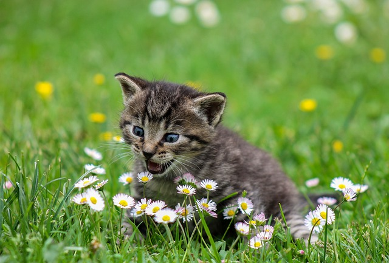
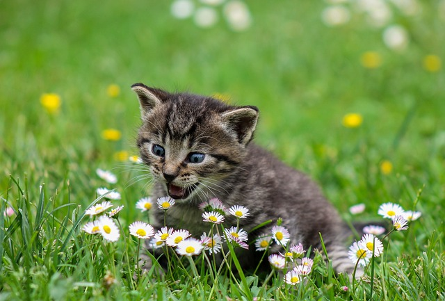

Taxonomía de los gatitos
- Reino: Animalia (Animales)
- Filo: Chordata (Cordados)
- Clase: Mammalia (Mamíferos)
- Orden: Carnivora (Carnívoros)
- Familia: Felidae (Felinos)
- Subfamilia: Felinae (Felinos pequeños)
- Género: Felis
- Especie: Felis catus
Los gatos se encuentran distribuidos a nivel mundial. En la actualidad, podemos hablar de un hábitat del gato doméstico, que sería aquel correspondiente a los ejemplares que viven cuidados por los humanos en sus hogares, y otros gatos, considerados salvajes, que se encuentran en entornos naturales sin contacto con personas. Además, alrededor de los núcleos humanos permanecen gatos callejeros que se buscan la vida sin que ninguna persona se responsabilice directamente de ellos. En esas condiciones los gatos solo sobreviven.
Los gatos son animales carnívoros estrictos. Su alimentación en el medio natural se basaba en la caza de roedores, aves y lagartos y no es raro que ocasionalmente ingieran plantas, supuestamente para complementar su dieta.
En la actualidad, podemos escoger entre varias opciones, como son la comida casera, el pienso, el alimento húmedo o el deshidratado, pero siempre de acuerdo con la etapa vital en la que se encuentre el gato para no caer en deficiencias nutricionales.
Al contrario de lo que se cree a nivel popular, donde la imagen del gato va unida a un plato de leche, los gatos adultos no necesitan consumir este alimento. De hecho, con la edad pierden la enzima imprescindible para digerir el lácteo, lo que hace que la leche pueda resultar indigesta para ellos


 
